Planazo
Una app para que organizar planes entre amigos sea simple, ordenado y sin estrés: crear un plan en segundos, cruzar la disponibilidad del grupo, votar y confirmar, todo en un mismo lugar.
Con amigos todo debería ser más simple. Organizar, también.
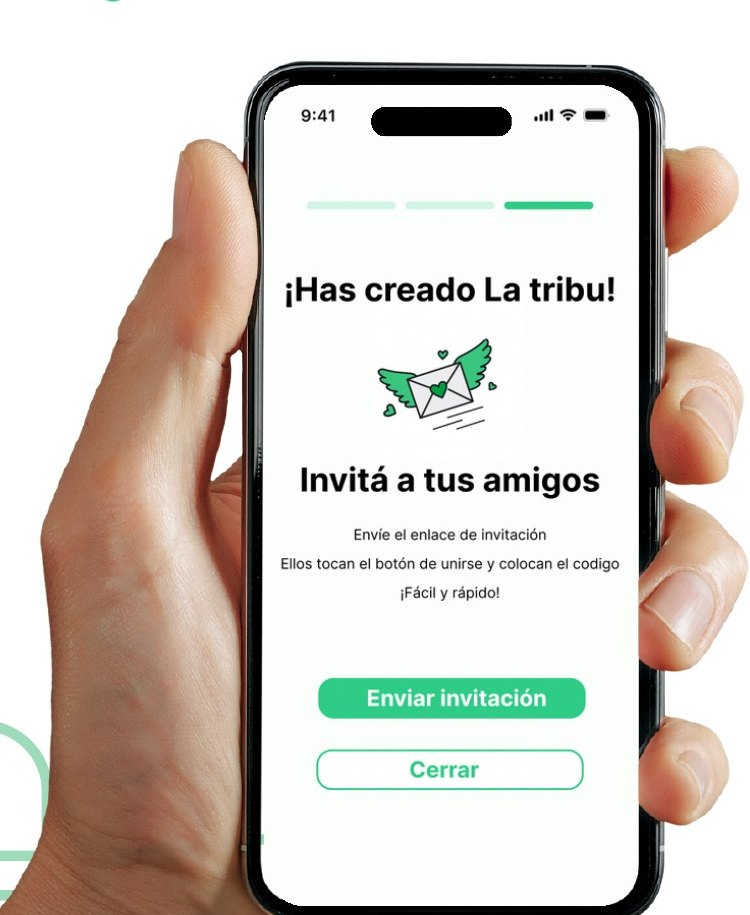
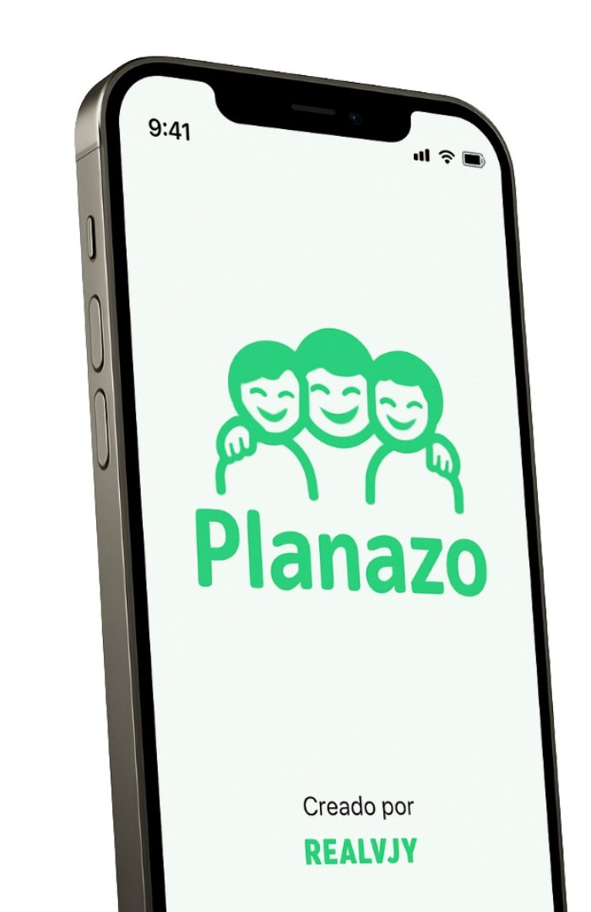
En los chats de grupo los planes se pierden entre decenas de mensajes, los horarios no coinciden y siempre alguien termina organizando todo. Muchos encuentros quedan “en veremos”.
Planazo centraliza la elección de horarios y actividades, propone planes según las coincidencias del grupo y suma dinámicas para destrabar la indecisión, como la ruleta o el plan sorpresa.
Problema
Organizar planes con amigos suele ser caótico: decenas de mensajes, horarios que no coinciden y falta de acuerdo sobre qué hacer.
Objetivo
Facilitar la organización de planes grupales, eliminar discusiones y sumar un factor de diversión que motive a usarla.
Solución
Centralizar horarios y actividades, proponer planes inteligentes y ofrecer dinámicas como plan sorpresa, ruleta o desafíos.
Usuarios
Jóvenes de 18 a 35 años que hacen planes con amigos y quieren coordinar y decidir sin fricción.
Por qué los planes no se concretan
Investigué en comunidades y redes, hice entrevistas, analicé competidores y revisé artículos sobre coordinación social y “decision fatigue”. Ninguna app combinaba disponibilidad, categorías y votación en un flujo guiado.
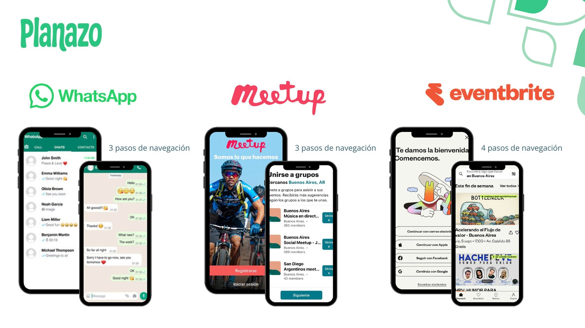
Lo que dijeron las personas
El mayor problema es coordinar horarios. WhatsApp es el canal de todos, pero no sirve para decidir rápido en grupo. Las dinámicas lúdicas aparecieron como una forma concreta de salir de la indecisión.
usa WhatsApp como canal principal
probaría Planazo con su grupo de amigos
quiere que la app sugiera planes concretos
dice que el mayor problema es coordinar horarios
siempre repite los mismos planes
afirma que los planes suelen cancelarse
pide funciones rápidas de decisión (ruleta o ranking)
Para adoptarla piden: simplicidad, variedad de propuestas, herramientas de decisión y diversión.
Sofía, 25 años, siempre termina organizando
La user persona y el mapa de empatía sintetizan las entrevistas: Sofía necesita una forma simple y divertida de organizar planes, porque coordinar en grupo consume tiempo y suele terminar en planes repetidos o cancelados.
“Nunca coincidimos con horarios. Nadie se decide y perdemos tiempo.”
Objetivos
- Ahorrar tiempo organizando planes.
- Tener propuestas variadas sin pensar demasiado.
- Evitar discusiones interminables en el grupo.
- Divertirse con la organización, no frustrarse.
Frustraciones
- Conversaciones eternas sin decisión final.
- No encontrar horarios en común.
- Ser siempre quien organiza.
- Terminar siempre en el mismo lugar.
Qué piensa y siente
Quiere más tiempo de calidad con sus amigos y siente que organizar por WhatsApp es una pérdida de tiempo.Qué la motiva
Experiencias nuevas, que la app le ahorre discusiones y ver de un vistazo qué plan funciona para todos.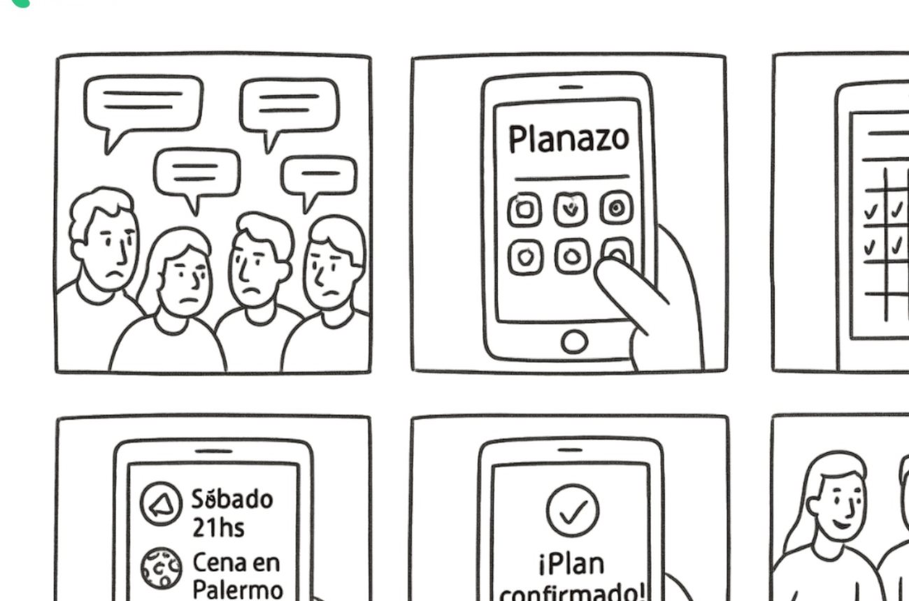
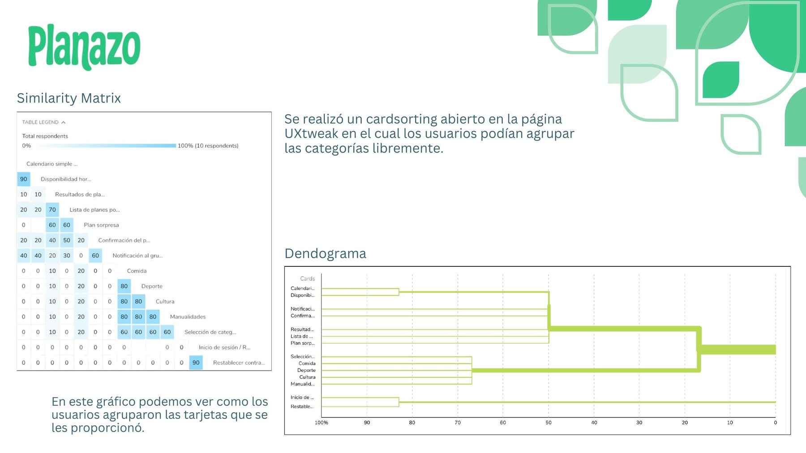
Arquitectura y flujos
El MVP se enfoca en registro, categorías, disponibilidad horaria del grupo, resultados de planes y confirmación. Gamificación, chat interno y mapas quedan para una segunda etapa.
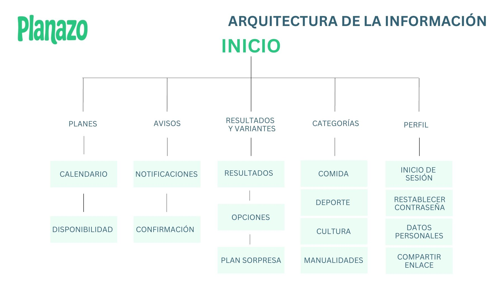
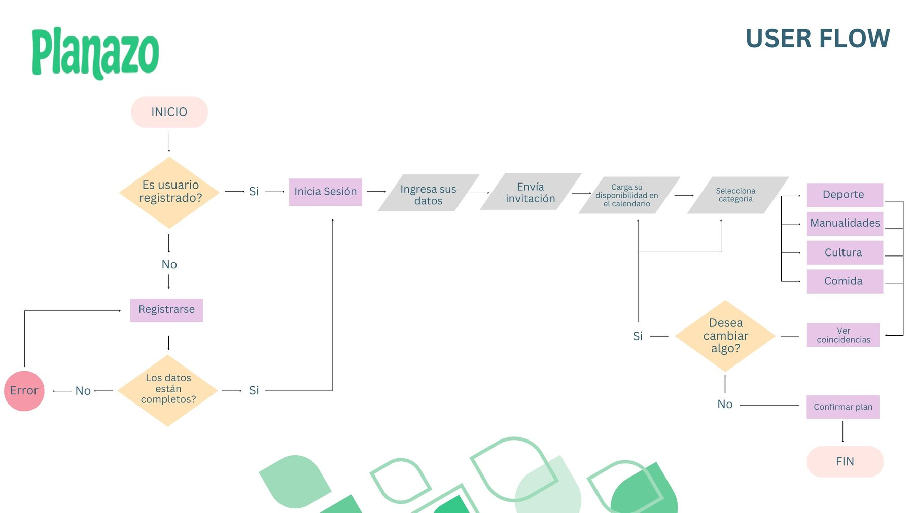
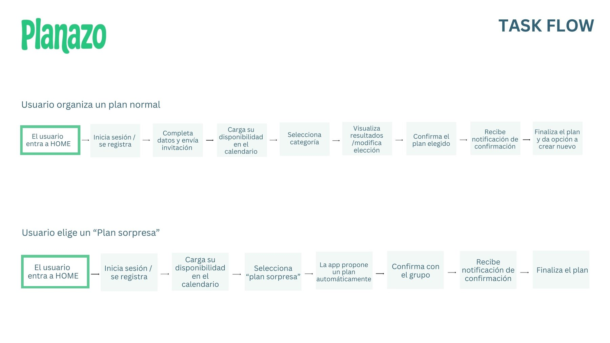
Del papel al prototipo
Bocetos a mano, wireframes de baja y media fidelidad sobre una grilla de 4 columnas para iOS (márgenes de 16 px, calles de 8 px), y un UI kit propio.
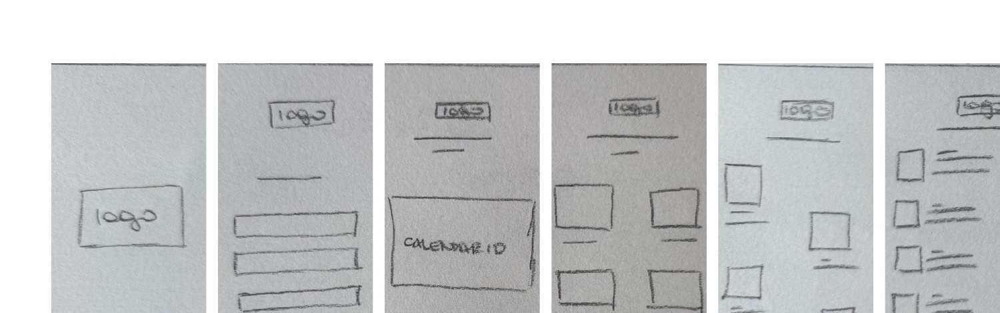
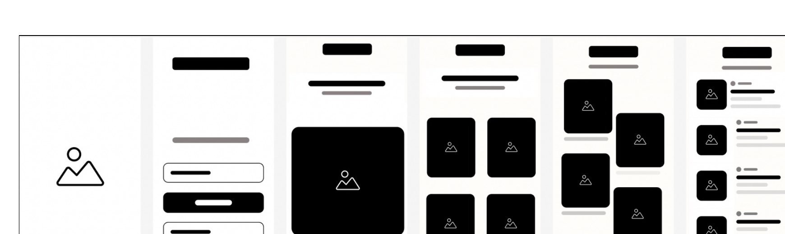
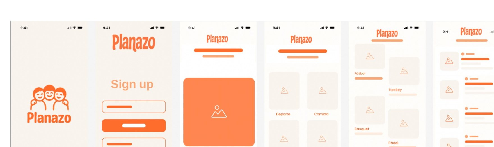
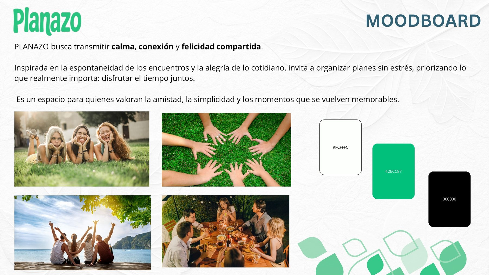
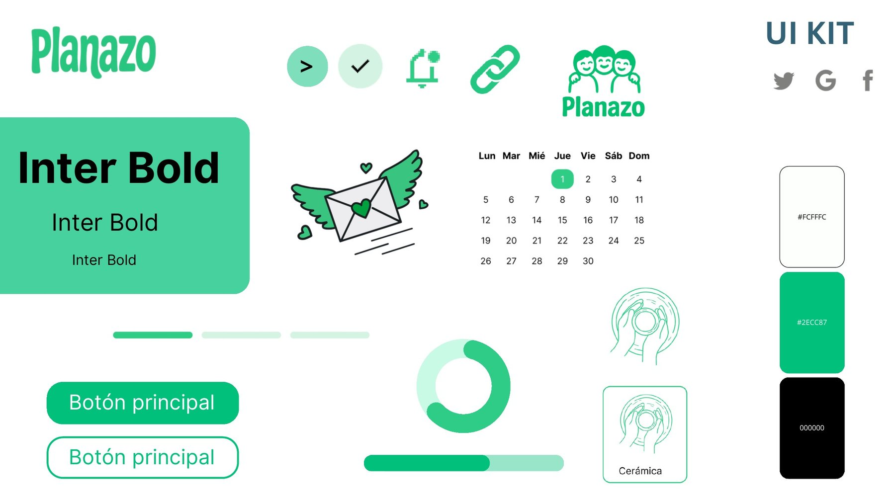
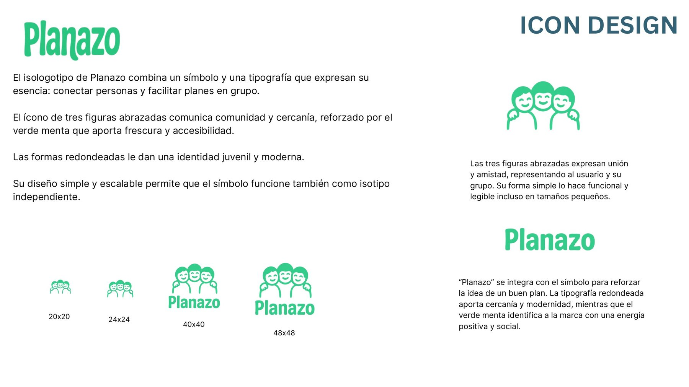
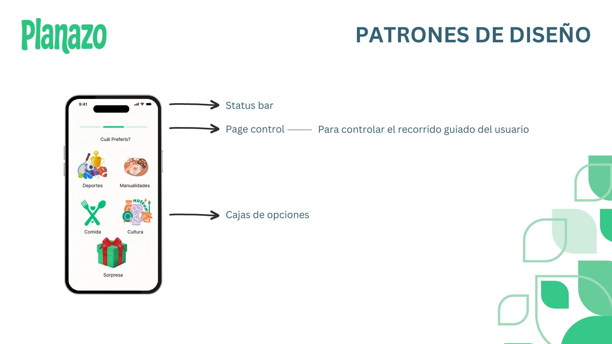
Heurísticas y testeo
Revisé la interfaz con las 10 heurísticas de Nielsen y testeé el prototipo con tres personas. Las tres tareas se completaron con éxito.
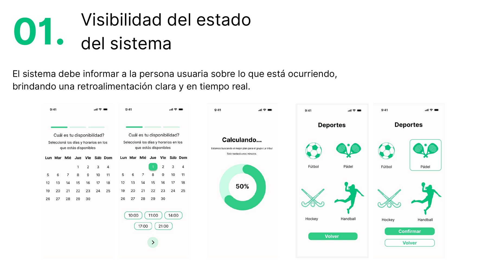
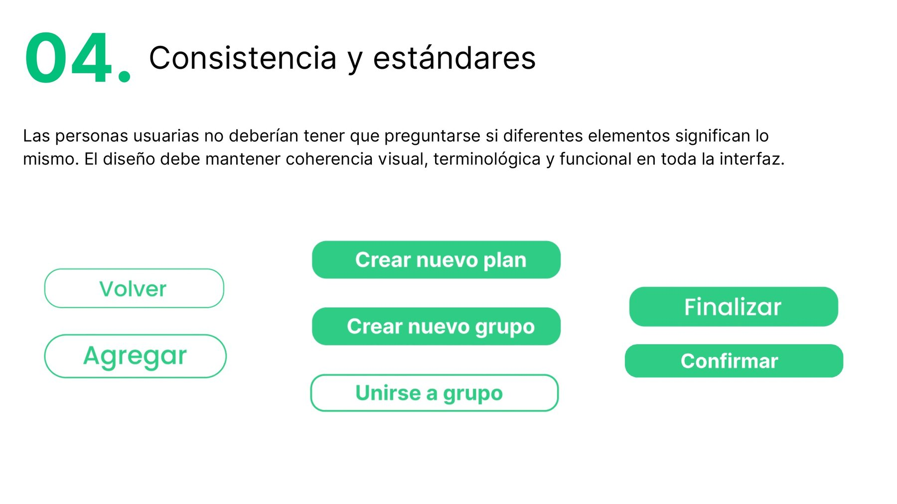
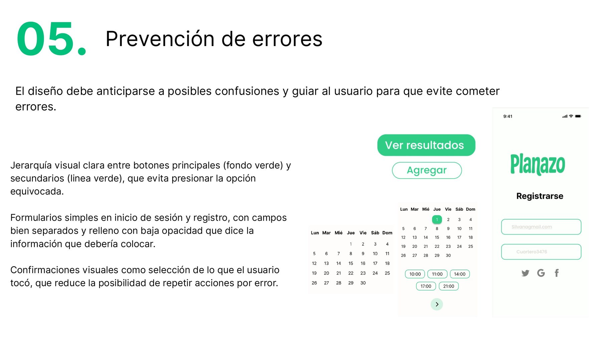
| Tarea | Éxito | Mediana | Observación clave |
|---|---|---|---|
| Crear un plan desde cero | 100 % | 02:15 | Sumar una micro-interacción visual al iniciar la app. |
| Votar entre planes que coinciden | 100 % | 00:20 | Mostrar los votos restantes junto a la barra. |
| Ver planes pasados y crear uno nuevo | 100 % | 01:00 | Atajo desde la home para ver planes anteriores. |
“Fue muy directo; al ser guiado entendí fácilmente el flujo.”
“Seguí los pasos de la app y fue intuitivo.”
“Me gustó la sugerencia automática de horarios.”
Prototipo de alta fidelidad
Disponibilidad, categorías, cálculo de coincidencias, votación, plan destacado e invitación por enlace.
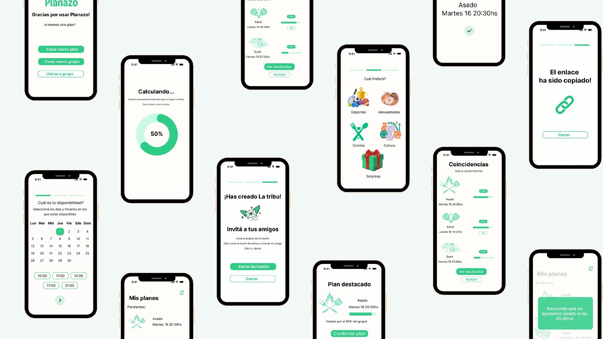